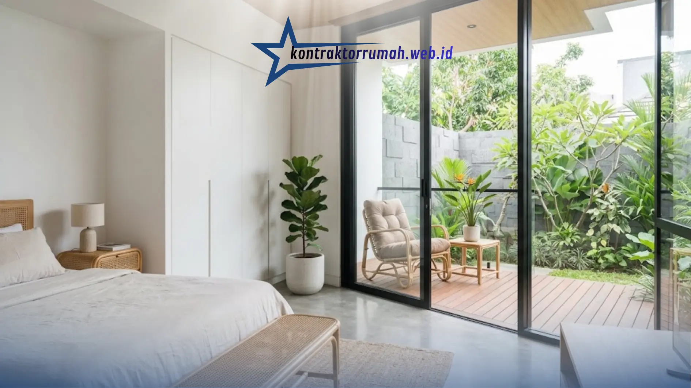

Memiliki hunian yang nyaman, estetik, dan fungsional adalah impian banyak orang, terutama bagi mereka yang tinggal di lahan terbatas seperti perkotaan. Saat ini, desain rumah minimalis semakin diminati karena mengutamakan efisiensi ruang tanpa mengorbankan keindahan visual.
Poin Penting
- Konsep open space menghilangkan sekat permanen antara ruang keluarga dan dapur agar rumah terasa lebih luas dan lega.
- Warna netral (putih, abu-abu muda, krem) memantulkan cahaya dan memudahkan padu padan furnitur.
- Jendela kaca besar mengoptimalkan pencahayaan alami sekaligus menghemat listrik di siang hari.
- Furnitur multifungsi seperti sofa bed dan meja lipat membantu menjaga kerapian di lahan terbatas.
- Sentuhan elemen natural seperti kayu, rotan, dan tanaman indoor menghadirkan nuansa hangat dan personal.
Gaya arsitektur ini sangat cocok diterapkan untuk memaksimalkan fungsi lahan yang terbatas sekaligus menghadirkan kesan lapang dan modern. Berikut beberapa inspirasi desain rumah minimalis terbaru yang bisa Anda terapkan.
Konsep Open Space
Menghilangkan sekat permanen antara ruang keluarga dan dapur adalah salah satu tren yang terus bertahan. Konsep open space menciptakan ilusi ruangan yang jauh lebih luas, lega, dan hangat, sekaligus memudahkan interaksi antar anggota keluarga saat beraktivitas di area berbeda. Untuk rumah bertipe kecil, konsep ini sangat efektif mengatasi kesan sempit.
Agar tetap fungsional, gunakan island counter atau meja bar sebagai pembatas visual antara dapur dan ruang keluarga tanpa perlu dinding.
Dominasi Warna Netral
Gunakan palet warna dasar seperti putih, abu-abu muda, atau krem untuk memantulkan cahaya dan memberikan kesan bersih serta lapang. Warna netral juga memberikan fleksibilitas tinggi dalam memadupadankan furnitur dan dekorasi, sehingga rumah tidak cepat terlihat ketinggalan zaman meski tren berganti.
Sebagai aksen, Anda bisa menambahkan satu warna berani di elemen kecil seperti bantal sofa, karpet, atau tanaman hias agar ruangan tidak terkesan monoton.
Jendela Kaca Besar
Optimalkan pencahayaan alami pada siang hari dengan jendela berukuran besar yang juga berfungsi menonjolkan kesan modern dan terbuka. Selain menghemat penggunaan listrik di siang hari, jendela besar juga menciptakan koneksi visual antara ruang dalam dan luar rumah, misalnya ke taman kecil atau halaman belakang.
Pertimbangkan penggunaan kaca low-E (low emissivity) agar cahaya tetap masuk tanpa membuat ruangan terasa terlalu panas.

Jendela kaca besar menghadirkan pencahayaan alami sekaligus kesan modern dan terbuka pada rumah minimalis.
Furnitur Multifungsi
Gunakan perabotan pintar yang memiliki ruang penyimpanan ekstra, seperti sofa bed, meja lipat, atau tempat tidur dengan laci di bagian bawah. Furnitur multifungsi sangat membantu menjaga kerapian rumah minimalis, terutama untuk unit dengan luas terbatas seperti apartemen atau rumah tipe 36.
Sentuhan Elemen Natural
Tren terbaru desain minimalis juga mulai memasukkan elemen kayu, rotan, atau tanaman indoor untuk menghadirkan nuansa hangat di tengah dominasi garis-garis tegas dan warna netral. Kombinasi ini membuat rumah minimalis terasa tidak kaku dan lebih personal.
Catatan dari tim Kontraktor Rumah: Desain rumah minimalis terbaru bukan sekadar soal mengurangi furnitur, tetapi tentang merancang ruang yang efisien, terang, dan nyaman untuk dihuni. Dengan menerapkan konsep open space, warna netral, jendela besar, furnitur multifungsi, dan sentuhan elemen natural, hunian impian yang estetik sekaligus fungsional bukan lagi sekadar angan-angan.
FAQ Seputar Desain Rumah Minimalis Terbaru
Setelah menentukan inspirasi desain yang sesuai, langkah selanjutnya adalah mewujudkannya bersama tim arsitek dan kontraktor yang berpengalaman agar hasil akhirnya presisi sesuai konsep. Konsultasikan kebutuhan proyek Anda bersama tim kami sekarang.